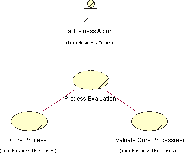
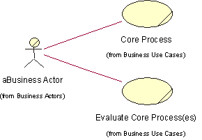
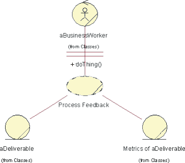
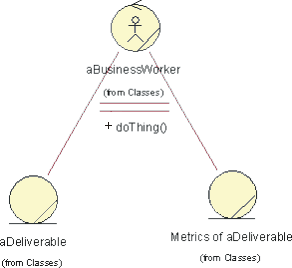
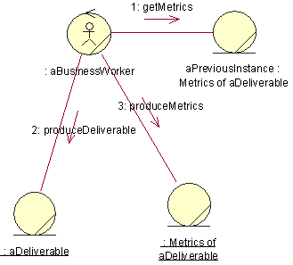
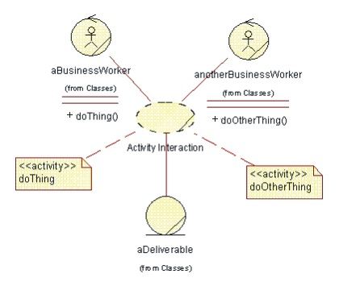
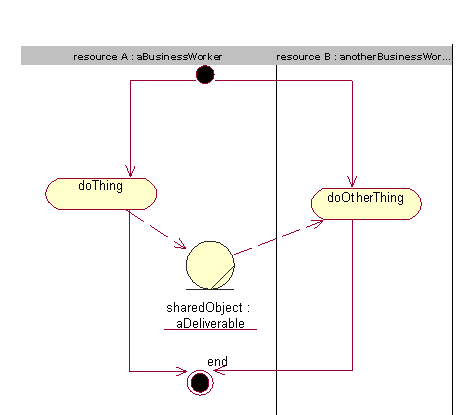
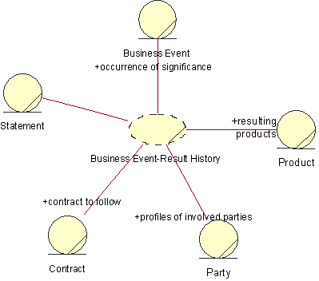
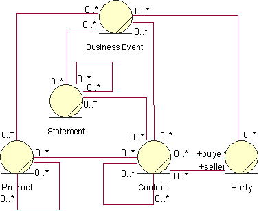

| Концепция: Business Patterns |
 |
|
| Связанные элементы |
|---|
|
We define a business pattern as generalized solutions that can be implemented and applied in a problem situation (a context), and thereby eliminate one or more of the inherent problems. Patterns can be considered prototypes for production. [ERI00] Patterns are part of how you define your business architecture:
We present a few patterns that can be useful as a baseline: All of these patterns are based on the extensive pattern collection in [ERI00]. Process Evaluation PatternContext: This pattern is a sibling to the process feedback pattern. It reflects a need to plan for more strategic and long-term investments when improving a process. Problem: The process evaluation pattern can be applied to all situations where the business process results must be evaluated to provide a competitive edge. Manufacturing, marketing, and sales processes are examples of the different business processes that must be evaluated each time they are executed. Solution: A solution to this problem is to have an evaluation process in place that continuously monitors and suggests improvements, both long-term and short term, to a business process.  Participants of the process evaluation pattern List of participants: aBusiness Actor-A consumer of the business. Core Process-A business process which has the primary purpose to fulfill a need of the consumer. Evaluate Core Process(es)-A business process whit the primary purpose of monitoring one or more core processes to propose improvements to make them more efficient.  Dynamic view of the process evaluation pattern. For each core business process, a supporting business process that evaluates and improves it should exist. This evaluation process needs to interact with the business actor involved in the basic process. This pattern has no static view. Process Feedback PatternContext: The process feedback pattern can be applied to all situations where the business process results must be evaluated to provide a competitive edge. Manufacturing, marketing, and sales processes are examples of the different business processes that must be evaluated each time they are executed. For example, if the sales process is evaluated each time it's executed, the sales budget can be increased or decreased based on feedback from the sales channels. Problem: A process starts with an input and ends with an output. The process uses and consumes resources to create and refine other resources that become the output. A process also has a certain goal to achieve, which can be expressed in the number of resources that are output from the process. If resources are not used effectively, it may become too expensive to produce the outputs of the process, which would enable competitors to gain market shares. Solution: A solution to this problem is to measure the effectiveness of the process, and at each initiation of a new instance of the process, perform a few steps to evaluate how the process can be improved the next time.  Participants of the process feedback pattern List of participants: aBusiness Worker-A role including the set of responsibilities needed to refine the process deliverable. aDeliverable-This is the deliverable of the process, which changes state as the business worker manipulates it. Metrics of aDeliverable-This is the metrics collected to show the state changes of the process deliverable, and also how the business worker performs.  Static view of the process feedback pattern  Dynamic view of the process feedback pattern Activity Interaction PatternContext: The activity interaction pattern can be used wherever complex interactions between activities within a business process are modeled. Problem: Activities may share resources with one another, typically by way of data transmission. Solution: The activity interaction pattern can be used to model and organize complex interactions between business resources.  Participants of the activity interaction pattern List of participants: aBusinessWorker-One of the business workers participating in the realization of the process. anotherBusinessWorker-Another of the business workers participating in the realization of the process. doThing-Activity performed by an instance of aBusinessWorker. doOtherThing-Activity performed by an instance of anotherBusinessWorker. aDeliverable-What is produced or maintained by the process.  Dynamic view of the activity interaction pattern -Resource A and resource B use the same shared object. This pattern has no static view. Business Event-Result History PatternContext: The business event-result history pattern is suitable for problem domains where you need to maintain a history of business events and their results. It is most often used to model financial systems and enterprise resource planning (ERP) systems. Problem: The business event-result history pattern is use to track significant business events and then to connect these events to their results. Capturing the different business events, along with their results-such as decisions, contracts, statements, or products-helps you make better business decisions. The goal of this pattern is to enable you to keep a record of all important business events, which are typically described with attributes such as description, purpose, and result. Solution: Using the business event-results history pattern ensures that models produced to track important business events and their causes are extensible. Extensible means that new kinds of events and causes can be added at a later date to the same overall structure. Using this pattern makes it possible to record business events and, at a later point in time, to analyze these events and draw conclusions. These conclusions typically lead to activities or decisions in the business, such as to discontinue a relationship with a customer or vendor because of poor payment history. If no record of business events is maintained, no history is available to learn from and the same mistakes may be repeated over and over again. One potential problem with this pattern is when too many low-level business events are recorded, the amount of detail makes the record hard to analyze and evaluate. Events should be defined so they're easy to understand in a business context; for example, order placed, product delivered, invoice paid, and so on.  Participants of the business event-result history pattern List of participants: Business Event-This business entity describes significant occurrences to the business. Examples of attributes to a Business Event could be date, priority, description, and type. Common types are delivery, contract signing, and purchase. Product-This business entity represents the deliverables. Products can be abstract objects, such as a service, business effort or market share or physical objects such as software and hardware. Common attributes are identifier and name. Common types of products are computer program, support, consultation, and installation. Party-This business entity may represent either individuals or companies. The parties play a role in the context of a Contract. Typical roles are seller and buyer. Party typically has the attributes name and address. Contract-This business entity represents a deal or a decision. The Contract defines the circumstances of a delivery, where the delivery is a Product. The Contract is usually between a seller and a buyer, but it can also be between other parties. Common attributes are description, date and until-date. Contracts can be associated with each other; for example, one contract can be complimentary to another contract. This is also shown with the recursive association. Examples of types of contracts are skeleton contract or lease contract. Statement-A Statement expresses a Contract. A Statement can express many contracts and a contract can be stated many times. Typical attributes are description and date. Statements can also be associated with each other. This is shown with the recursive association. Examples of types of statements are written statements and verbal statements.  The static view of the business event-result history pattern This pattern has no dynamic view. |
© Copyright IBM Corp. 1987, 2006. Все права защищены.. |